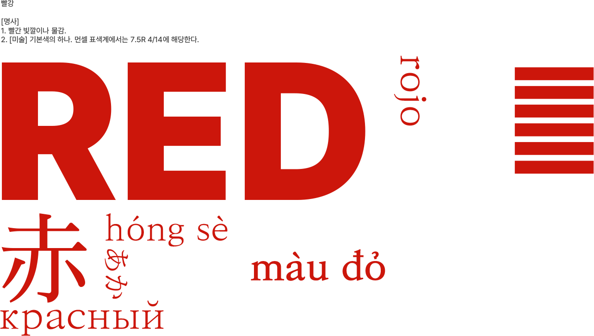

WHAT IS RED
: 빨강의 정의
수천 년 동안 서구 사회에서 빨강은 색이라 불릴 만한 유일한 색이었다.
시간적으로나 위계상으로나 빨강은 다른 모든 색들보다 앞섰다.
인간은 빨강을 기반으로 하여 처음으로 색 체험을 하고, 성공을 맛보았으며, 자신의 채색된 우주를 구축했다.
빨강을 나타내는 아주 오랜 옛날의 어휘들을 통해 알 수 있듯이 인간은 일찍부터 빨강으로 다양한 색조와 뉘앙스를 만들어 냈다.
시간적으로나 위계상으로나 빨강은 다른 모든 색들보다 앞섰다.
인간은 빨강을 기반으로 하여 처음으로 색 체험을 하고, 성공을 맛보았으며, 자신의 채색된 우주를 구축했다.
빨강을 나타내는 아주 오랜 옛날의 어휘들을 통해 알 수 있듯이 인간은 일찍부터 빨강으로 다양한 색조와 뉘앙스를 만들어 냈다.
장신구와 보석, 수호하고 장식하고 행운을 불러오는 부적처럼 몸에 지니고 다니는
온갖 소품에 이르기까지 빨강은 일찍부터 그 위상이 높았다.
각종 공연이나 제의에서도 빨강은 권력이나 신성함과 연관되었고,
매우 풍요로운 상징체계를 갖고 있었으며, 때로는 초자연적인 힘을 지닌 것처럼 보였다.
이처럼 여러 가지 면에서 빨강은 고대 사회에서 가장 원초의 색이었을 뿐 아니라 가장 우월한 색이었다.
각종 공연이나 제의에서도 빨강은 권력이나 신성함과 연관되었고,
매우 풍요로운 상징체계를 갖고 있었으며, 때로는 초자연적인 힘을 지닌 것처럼 보였다.
이처럼 여러 가지 면에서 빨강은 고대 사회에서 가장 원초의 색이었을 뿐 아니라 가장 우월한 색이었다.
HOW RED WORKED
: 빨강의 상징성
내용2